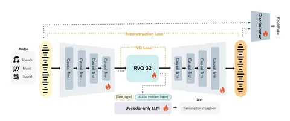

Разбираем техрепорт MOSS-TTS. В нём генерацию речи пытаются свести к конструкции, объединяющей хороший аудиотокенизатор и GPT, которая предсказывает его токены.
В основе MOSS-TTS собственный аудиотокенизатор авторов. Он принимает аудио 24 kHz и сжимает его до 12,5 временных фреймов в секунду с разным битрейтом в зависимости от количества используемых слоёв RVQ. Каждый фрейм содержит несколько RVQ-кодов — по одному на используемый слой. Аудиотокенизатор полностью построен на трансформерных блоках (без использования CNN) и обучается на универсальных аудиоданных — от речи до музыки и звуковых эффектов.
Сырой аудиосигнал режется на патчи, которые проходят через трансформер с causal sliding-window attention. RVQ с 32 слоями превращает непрерывные представления в дискретные токены. Во время обучения используется разное количество слоёв RVQ, поэтому один и тот же токенизатор умеет работать с разным битрейтом.
Если учить такой кодек просто восстанавливать аудио, RVQ-токены могут хорошо кодировать акустические признаки (тембр, интонацию и т.д.), но не содержать семантический смысл. Поэтому поверх выходов квантайзера навешивают 0.5B decoder-only LM и заставляют её решать текстовые задачи ASR, multi-speaker ASR и audio captioning. Градиент от этих задач течёт обратно в кодек и заставляет сами аудиотокены содержать семантическую информацию.
Параллельно токенизатор учится качественно восстанавливать звук. Для этого есть reconstruction loss, лоссы квантайзера и два GAN-дискриминатора. В итоге семантика, акустика и квантование учатся совместно. Правда, GAN-loss авторы подключают не сразу: первую часть обучения модель учится без них.
После того как хороший кодек получен, задача TTS превращается просто в предсказание его токенов. Пробуют две архитектуры с разным балансом качеств.
1) Delay Pattern. Поверх hidden states GPT накидывается несколько prediction heads, а разные уровни RVQ сдвигаются относительно друг друга. Это позволяет не растягивать генерацию в число RVQ-слоёв раз и быстро предсказывать токены. Минус в том, что увеличивается latency до первого звука.
2) Local Transformer. Основной трансформер работает по времени, а небольшой поверх него — в глубину RVQ-кодов и последовательно предсказывает все коды одного фрейма. Такой вариант позволяет быстрее начать стриминг и, по экспериментам авторов, лучше сохраняет идентичность спикера. В тестах на клонинг 1.7B Local Transformer получает более высокую speaker similarity, чем 8B-модель с Delay Pattern. Прямого сравнения двух подходов при одинаковом размере модели авторы не приводят, так что делать вывод, что Local Transformer во всём лучше, не очень хочется.
Много внимания уделяют данным. Миллионы часов аудио проходят ASR, diarization, фильтрацию по качеству, проверку согласованности языка аудио и текста, а также текста с длиной аудио. Более того, входной текст специально портят, убирая и добавляя знаки препинания, вставляя пробелы и переносы строк. Так модель пытаются сделать устойчивее к тому, что реально может прийти от пользователя.
Авторы репортят очень хорошее качество самого кодека при разных битрейтах: на речи он превосходит рассмотренные открытые кодеки, а на музыке и других типах аудио показывает конкурентные результаты. Local Transformer показывает более высокую speaker similarity, а Delay Pattern авторы используют для длинных генераций. На последней стадии претрейна максимальную последовательность увеличивают до 64k позиций, благодаря чему в демо модель способна за один проход сгенерировать непрерывную речь длиной в 45 минут. Правда, на очень длинных последовательностях similarity постепенно падает, модель начинает забывать голос из промпта.
Идея сводится к тому, что если сделать хороший аудиотокенизатор, который сохраняет семантику и акустику, то сам TTS можно свести к предсказанию дискретных токенов GPT-шкой. А дальше уже выбирать баланс: Delay Pattern для более длинной стабильной генерации или Local Transformer для более локального моделирования и лучшего сохранения идентичности спикера.
Денис Шувалов
